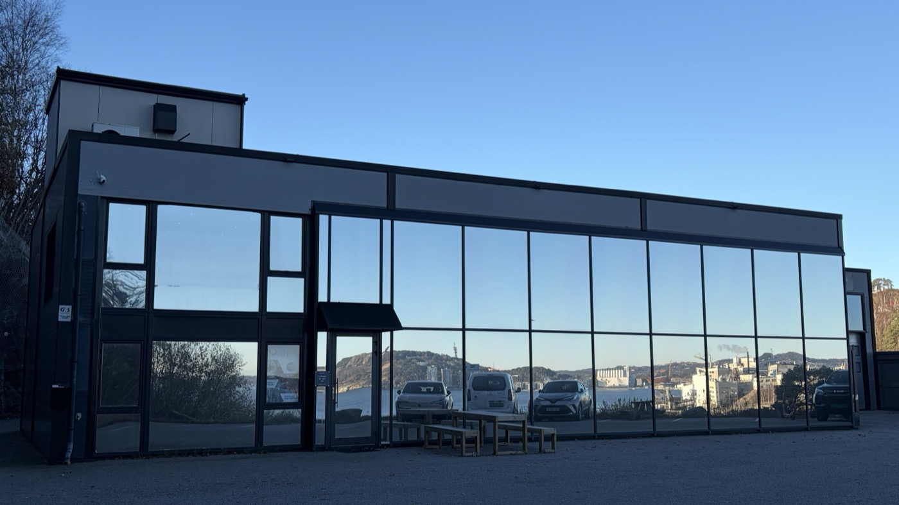
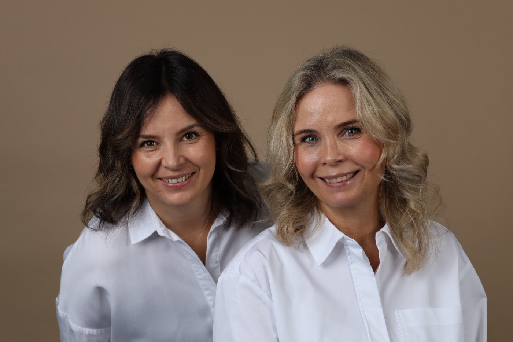

Om OFA
Hvem møter du? Hva gjør vi? Vår historie Vi samarbeider med

OFA – Opplæringskontor for FBIE i Agder er et samarbeid mellom lærebedrifter i frisør-, blomsterdekoratør- og salgsfaget i Agder. Kontoret styres gjennom styre og årsmøte. I opplæringsloven omtales opplæringskontorene som samarbeidsorgan for lærebedrifter.
Vi følger lærlingene tett gjennom hele læretiden, fra utplassering og læreplass til fag- og svennebrev. Underveis er vi bindeleddet mellom lærlingen, bedriften og fylkeskommunen.
Vi holder til i Kartheia 5 i Kristiansand, i kontorfellesskap med to andre opplæringskontor.
Hvem møter du?

Foto: Mathilde Myre / Kreathilde Foto
Tonje – fagansvarlig
Tonje har vært i OFA siden 2020. Hun er erfaren frisør og utdanner seg til yrkesfaglærer i frisørfaget. Kontakt henne om faglig oppfølging av lærlinger, opplæringen i bedrift og forberedelse til fag- og svennebrev.
Anne Lene – daglig leder
Anne Lene har vært i OFA siden 2019. Hun har lang erfaring fra bemanningsbransjen med å koble riktige folk til riktige arbeidsplasser, og kjenner salg og kunderådgivning fra innsiden. Kontakt henne om læreplasser, lærekontrakter og samarbeid med bedrifter.
Telefonnummer og e-post finner du på kontaktsiden.
Hva gjør vi?
Følger opp lærlinger
Vi følger lærlingen fra første dag til fag- eller svenneprøven. Underveis har vi jevnlig kontakt og arrangerer kurs og teoridager der lærlingene får faglig påfyll og treffer andre i samme fag.
Støtter lærebedrifter
Vi hjelper bedriftene med godkjenning, lærekontrakter, rapportering og andre lovpålagte oppgaver. Når dere har faglige spørsmål eller noe er vanskelig, er det bare å ta kontakt – vi kjenner både regelverket og bransjen.
Sikrer kvalitet i opplæringen
Vi hjelper bedriftene med å planlegge og dokumentere opplæringen, slik at lærlingen kommer gjennom hele læreplanen. Vi tilbyr også kurs for faglige ledere og instruktører.
Vår historie
- 2001 OFA ble etablert som Opplæringskontor for Frisører i Agder og har jobbet med frisørfaget siden starten.
- 2024 Vi fikk de første lærlingene i salgsfaget, som vi tilbyr som fagbrev nummer to for utlærte frisører og blomsterdekoratører.
- 2025 Vi tok imot de første lærlingene i blomsterdekoratørfaget. Samme år endret vi navn til Opplæringskontor for FBIE i Agder. FBIE står for utdanningsprogrammet frisør, blomster, interiør og eksponeringsdesign, som frisør- og blomsterdekoratørfaget har vært en del av siden fagfornyelsen i 2020. Forkortelsen OFA beholdt vi.
Vi samarbeider med
- Agder fylkeskommune – har ansvaret for fag- og yrkesopplæringen og godkjenner lærebedrifter og opplæring i bedrift.
- Tangen videregående skole – Kristiansand. Vg1 FBIE, Vg2 blomsterdekoratør og Vg2 frisør.
- Eilert Sundt videregående skole – Farsund. Vg1 FBIE, Vg2 frisør.
- Sam Eyde videregående skole – Arendal. Vg1 FBIE, Vg2 frisør.